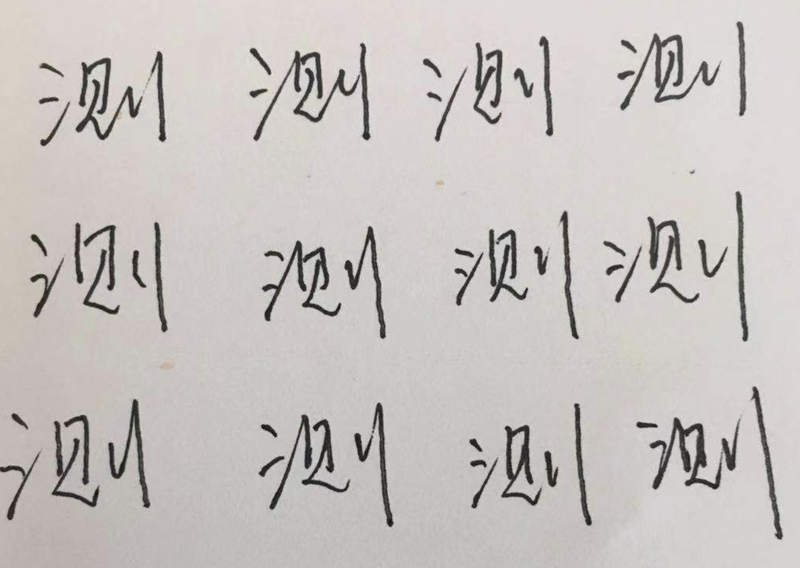
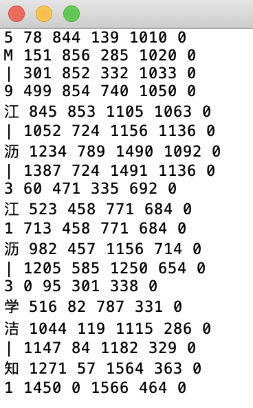
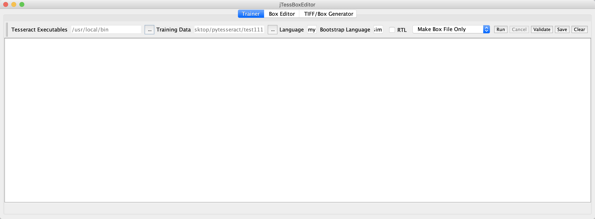
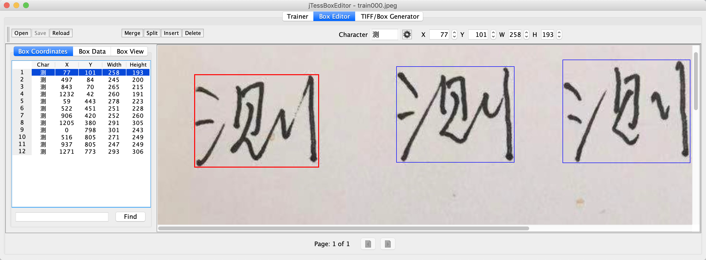
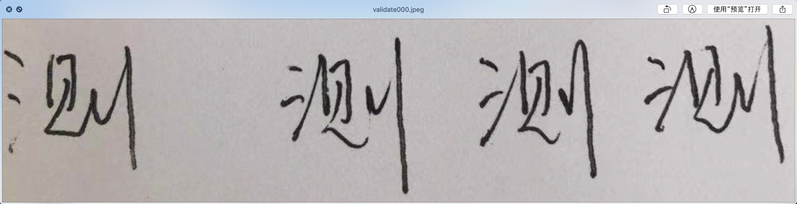
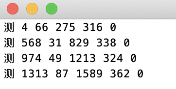

概念
Tesseract是一个光学字符识别引擎，支持多种操作系统。Tesseract是基于Apache许可证的自由软件，自2006 年起由Google赞助开发。 2006年，Tesseract被认为是最精准的开源光学字符识别引擎之一。【维基百科】
声明
在使用tesseract-ocr的过程中，我遇到了一些问题，并找到了一种适合我的使用方式，在这里给大家分享一下。
困境
- 在Mac下使用Homebrew安装tesseract-ocr时，—with-training-tools参数取消，所以无法训练数据；如果使用github下载源码，然后编译安装的话，需要安装很多依赖，比较麻烦；
- 如果在ubuntu下使用apt-get安装，默认是携带各种训练工具的，但是我的ubuntu系统是server版，不支持桌面，所以在标注图片时很不方便。
我的解决方案
我的解决方案是：在MacOS下标注，然后把标注好的box文件送到Ubuntu Server下，打包训练语言模型。
注意：如果您满足我在上文中提到的困境，就可以继续往下读了。
其他方案
- 在Mac下编译tesseract，使用jTessBoxEditor标注+训练
- 在Linux桌面版安装tesseract，使用jTessBoxEditor标注+训练
- 在Windows安装tesseract，使用jTessBoxEditor标注+训练
安装
tesseract-ocr支持Linux、Windows、MacOS、Android、IOS等操作系统。由于本人使用的操作系统是MacOS和Linux ubuntu server，所以本文只介绍这两个环境的安装。
Mac
借助Homebrew，执行命令：1
brew install tesseract-ocr
安装完以后，截至今天为止，默认是4.0.0版本，不支持—with-training-tools，所以也不支持训练功能。如果直接使用github下载源码编译安装，是可以支持的，但是我比较懒，在需要训练操作时，我就去Linux上搞了（Linux的4.0.0是携带辅助训练工具包的）。
Linux
借助apt-get，执行命令：1
apt-get install tesseract-ocr
基本用法
设置识别语言，默认英文（eng），中文是chi_sim（需另行下载语言包），如果需要同时识别两种或者两种以上语言，比如同时识别中文和英文，格式为“-l chi_sim+eng”，执行以下命令，识别结果会以txt文本形式保存在目标路径下。
1
tesseract [待识别图片路径] [目标识别结果路径] -l eng
设置文字坐标输出，执行以下命令：
1
tesseract [待识别图片路径] [目标识别结果路径] -l test makebox
识别结果会以box后缀文件形式保存在目标路径下，坐标内容包含识别结果左上角的横纵坐标以及长宽值，比如识别如下字符：

其结果为（啧啧啧，通用中文库识别效果很差）：

数据训练
借助第三方工具
jTessBoxEditor是一款辅助标记的工具，在本地安装完tesseract-ocr以后，可以在jTessBoxEditor中配置tesseract-ocr的启动路径，然后基于tesseract-ocr进行可视化标注。如下图所示：

环境配置
在jTessBoxEditor的Trainer标签下，主要功能说明：
- Tesseract Executables配置tesseract程序启动路径
- Training Data存放训练数据路径
- Language为自定义训练集名称
- Bootstrap Language是训练之前需要借助的语言模型名称
- 然后选择Make Box File Only
注意：使用jTessBoxEditor需要配置Java环境变量。
初步识别
- 选择Make Box File Only
- 点击run按钮，就可以出来借助默认语言模型执行的识别结果。
开始标注
在获取到执行结果以后，切换到Box Editor标签，如下图所示：

标注过程：
- 首先点击“open”按钮打，打开之前识别结果box
- 在左侧列表中，选择一个字符，比如上图中手写版的“测”字，然后在右侧提示框中对其进行调整，直到红色框完美包含字符
- 然后依次调整其余所有字符
- 如果需要新增标注框，点击“insert”，或者需要删除，请点击“delete”
- 如何需要合并两个字符，点击“merge”，或者均分字符，请点击“split”
- 点击“save”保存box
- 返回上个标签Trainer，然后选择“Train with Existing Box”，点击“run”执行
- 这时会在训练路径下生存.traindate语言模型
- 最后，再换一张与训练数据类似的图片，点击Validate进行验证。
注意：如果你没有在Mac上编译安装tesseract，只是通过brew安装了4.x.x版本，那么到第6步就可以停止了，因为该版本不携带训练工具，你可以拿着标注好的box文件，找一个linux机器手动生存语言模型包，过程参考上述“命令行打包语言模型”。
命令行打包语言模型
- 使用tesseract命令生成识别结果box文件
- 调整box（或者直接使用jTessBoxEditor标注结果）
依次执行以下命令：
1
2
3
4
5
6
7
8
9# picture.jpeg是待识别图片
tesseract picture.jpeg picture nobatch box.train
unicharset_extractor picture.box
# 新建font_properties本文，内容为test 0 0 0 0 0
shapeclustering -F font_properties -U unicharset picture.tr
mftraining -F font_properties -U unicharset -O unicharset picture.tr
cntraining picture.tr
# 到此为止，会生成unicharset、inttemp、pffmtable、shapetable、normproto等五个文件，分别给他们加上test.前缀（test为自定义语言模型名称）
combine_tessdata test.此时会在当前目录下生成test.traineddata文件，移动该文件到tesseract-ocr的tesedata目录下（我的路径是_usr_share_tesseract-ocr/4.00_tessdata/）
然后设置语言执行识别命令：
1
2# test是刚才生成的语言模型名称
tesseract test1.jpeg test1 -l test执行结果：（效果还是不错的）


总结
总体而言，虽然是桌面版标准+服务器端处理，但是使用起来还是可以接受的。如果将来有时间，可以研究一下在mac下之间编译tesseract源码